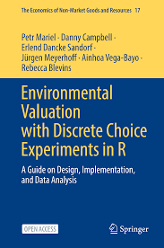
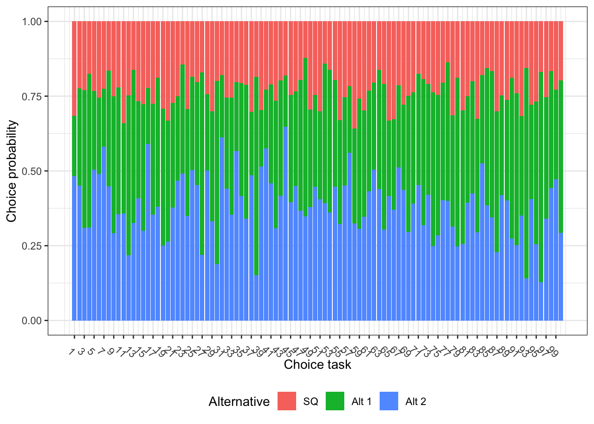

Show code
# Note if you don't have packages install.packages("put library name in here")
library(Rfast)
library(spdesign)
library(ggplot2)
library(tidyr)
library(tibble)Discrete Choice Experiments (DCEs) present respondents with several choice scenarios, each containing multiple alternatives described by various attributes and their levels. Respondents choose their preferred alternative in each scenario. R packages facilitate the design of DCEs (e.g., using orthogonal main-effect designs) and the analysis of choice data using models like conditional and binary logit.
For our example we will be using this book
Environmental Valuation with Discrete Choice Experiments in R (Mariel et al. 2025)

These are the libraries you need to run the code below:
# Note if you don't have packages install.packages("put library name in here")
library(Rfast)
library(spdesign)
library(ggplot2)
library(tidyr)
library(tibble)We will use the example the above book uses through out the chapters.
| Attributes | Labels | Levels |
|---|---|---|
| Size of Wind Farm (discrete) | Small Farms | 0 |
| Note reference is LargeFarm | 1 | |
| MediumFarms | 0 | |
| 1 | ||
| Max. Height Turbine (discrete) | Low Height | 0 |
| Note reference is HighHeight | 1 | |
| Medium Height | 0 | |
| 1 | ||
| Reduction in Red Kite (continous) | Red Kite | 5 |
| 7.5 | ||
| 10 | ||
| 12.5 | ||
| 15 | ||
| Distance to residents (continous) | MinDistance | 750 |
| 1000 | ||
| 1250 | ||
| 1500 | ||
| 1750 | ||
MonthlyCost (Continous) |
Cost | 0 |
| 1 | ||
| 2 | ||
| 3 | ||
| 4 | ||
| ….. | ||
| …. | ||
| 10 |
Lets first consider this example

This choice card has 3 alternatives and thus 3 different utility functions you are estimating:
\[ \begin{aligned} U_{n1t} =\; & \beta_{mf} \, Med.Farms_{n1t} + \beta_{sf} \, SmallFarms_{n1t} \\& + \beta_{mh} \, Med.Height_{n1t} + \beta_{lh} \, LowHeight_{n1t} \\& + \beta_{rk} \, redKite_{n|t} + \beta_{md} \, MinDistance_{n1t} \\& + \beta_{cost} \, Cost_{n1t} + \epsilon_{n1t} \end{aligned} \]
\[ \begin{aligned} U_{n2t}= \beta_{mf}Med.Farms_{n2t}+\beta_{sf}SmallFarms_{n2t} \\ +\beta_{mh}Med.Height_{n2t}+\beta_{lh}LowHeight_{n2t} \\ +\beta_{rk}redKite_{n2t}+\beta_{md}MinDistance_{n2t} \\ \beta_{cost}Cost_{n2t}+ \epsilon_{n2t} \\ \end{aligned} \]
Program C will be alternative 3 and thus is indexed by 3
\[ \begin{aligned} U_{n3t}= \beta_{mf}Med.Farms_{n3t}+\beta_{sf}SmallFarms_{n3t} \\ +\beta_{mh}Med.Height_{n3t}+\beta_{lh}LowHeight_{n3t} \\ +\beta_{rk}redKite_{n3t}+\beta_{md}MinDistance_{n3t} \\ \beta_{cost}Cost_{n3t}+ \epsilon_{n3t} \\ \end{aligned} \]
We will now look at a full factorial design for the entire choice set and all the levels. Given the choices above the amount of possible combinations balloons to 5mil+ observations!
# Create the full factorial using a named list of attributes and levels in the wide format
full_fact <- full_factorial( list( alt1_sq = 1,
alt1_farm = 0,
alt1_height = 0,
alt1_redkite = 0,
alt1_distance = 0,
alt1_cost = 0,
alt2_sq = 0,
alt2_farm = c(1, 2, 3),
alt2_height = c(1, 2, 3),
alt2_redkite = c(-5, -2.5, 0, 2.5, 5), alt2_distance = c(0, 0.25, 0.5, 0.75, 1), alt2_cost = 1:10,
alt3_sq = 0,
alt3_farm = c(1, 2, 3),
alt3_height = c(1, 2, 3),
alt3_redkite = c(-5, -2.5, 0, 2.5, 5), alt3_distance = c(0, 0.25, 0.5, 0.75, 1), alt3_cost = 1:10
) )
# Show the first six rows and 8th to 12th columns of the design matrix
full_fact[1:6, c(1, 8:12)] alt1_sq alt2_farm alt2_height alt2_redkite alt2_distance alt2_cost
1 1 1 1 -5 0 1
2 1 2 1 -5 0 1
3 1 3 1 -5 0 1
4 1 1 2 -5 0 1
5 1 2 2 -5 0 1
6 1 3 2 -5 0 1As the number of attributes, levels, and alternatives increases, full factorial designs become less practical for several reasons:
Duplicate alternatives: Some choice tasks may repeat the same alternative, which doesn’t help us learn anything new about preferences.
Dominated alternatives: Some options in a choice task might be clearly worse (or better) than others in every way. These don’t help reveal trade-offs because people will always pick the best one, making the data less useful.
Lack of control: The full factorial includes all possible combinations, even unrealistic ones. For example, we might want to prevent small wind farms from showing up with the highest red kite impact.
Lets say we want to put restriction by putting logical restrictions. For example, the tall windmills cannot be placed too close to residential areas (this could already be a law and thus is a more accurate reflection of reality).
candidate_set <- full_fact[!((full_fact$alt2_height == 1 & full_fact$alt2_distance < 0.75) | (full_fact$alt3_height == 1 & full_fact$alt3_distance < 0.75)), ]
candidate_set[1:6, c(1, 8:12)] alt1_sq alt2_farm alt2_height alt2_redkite alt2_distance alt2_cost
6754 1 1 2 -5 0 1
6755 1 2 2 -5 0 1
6756 1 3 2 -5 0 1
6757 1 1 3 -5 0 1
6758 1 2 3 -5 0 1
6759 1 3 3 -5 0 1This reduces the number of observations to 3.2million+ but does not make our choice set reasonable for population sampling. There for we move onto the next approach D-efficient
In statistics, we often try to reduce standard errors to improve the precision of our estimates. The same idea applies in Discrete Choice Experiments (DCEs). We want to design choice tasks that give us the most precise information.
Think of it this way:
When fitting a model, we already have the data and estimate the parameters that best explain it.
When designing a DCE, we do the reverse: we assume values for the parameters (called priors) and then search for the combination of attributes and levels that will give us the most information — that is, the lowest standard errors or lowest D-error.
For our example we need to design a utility function to estimate the best set of potential choice cards. The utility function was written out within choice set section. So here we are going to use the library spdesign to write out each alternative.
utility <- list(
alt1 = "b_sq[0] * sq[1]",
alt2 = "b_farm_dummy[c(0.25, 0.5)] * farm[c(1, 2, 3)] +
b_height_dummy[c(0.25, 0.5)] * height[c(1, 2, 3)] + b_redkite[-0.05] * redkite[c(-5, -2.5, 0, 2.5, 5)] + b_distance[0.5] * distance[c(0, 0.25, 0.5, 0.75, 1)] + b_cost[-0.05] * cost[seq(1, 10)]",
alt3 = "b_farm_dummy * farm + b_height_dummy * height +
b_redkite * redkite + b_distance * distance + b_cost * cost"
)In library spdesign generate_designis a function that generates efficient experimental designs. The function takes a set of indirect utility functions and generates efficient experimental designs assuming that people are maximizing utility.
Here are the arguments needed for our example:
utility |
A named list of utility functions. See the examples and the vignette for examples of how to define these correctly for different types of experimental designs. |
rows |
An integer giving the number of rows in the final design |
model |
A character string indicating the model to optimize the design for. Currently the only model programmed is the ‘mnl’ model and this is also set as the default. |
efficiency_criteria |
A character string giving the efficiency criteria to optimize for. One of ‘a-error’, ‘c-error’, ‘d-error’ or ‘s-error’. No default is set and argument must be specified. Optimizing for multiple criteria is not yet implemented and will result in an error. |
algorithm |
A character string giving the optimization algorithm to use. No default is set and the argument must be specified to be one of ‘rsc’, ‘federov’ or ‘random’. |
────────────────────────────────────────────────────────────────────────────────
Iteration A-error C-error D-error S-error Time stamp
────────────────────────────────────────────────────────────────────────────────
1 0.1322 N/A 0.0423 Inf2025-09-20 21:19:06.380483
──────────────────────────────────────────────────────────────────────────── Time spent searching for designs: 0.05410409 summary(design)---------------------------------------------------------------------
An 'spdesign' object
Utility functions:
alt1 : b_sq * alt1_sq
alt2 : b_farm_dummy * alt2_farm + b_height_dummy * alt2_height + b_redkite * alt2_redkite + b_distance * alt2_distance + b_cost * alt2_cost
alt3 : b_farm_dummy * alt3_farm + b_height_dummy * alt3_height + b_redkite * alt3_redkite + b_distance * alt3_distance + b_cost * alt3_cost
a-error c-error d-error s-error
0.13218255 NaN 0.04234627 Inf
---------------------------------------------------------------------
Printing the first few rows of the design
# A tibble: 6 × 15
alt1_sq alt2_farm2 alt2_farm3 alt2_height2 alt2_height3 alt2_redkite
<dbl> <dbl> <dbl> <dbl> <dbl> <dbl>
1 1 0 0 0 0 0
2 1 0 0 1 0 -2.5
3 1 0 0 1 0 -2.5
4 1 1 0 0 1 -5
5 1 0 0 0 1 2.5
6 1 1 0 0 0 2.5
# ℹ 9 more variables: alt2_distance <dbl>, alt2_cost <dbl>, alt3_farm2 <dbl>,
# alt3_farm3 <dbl>, alt3_height2 <dbl>, alt3_height3 <dbl>,
# alt3_redkite <dbl>, alt3_distance <dbl>, alt3_cost <dbl>
---------------------------------------------------------------------Next step check correlation
# Correlation matrix
cor(design)Warning in stats::cor(x[["design"]], y = NULL, use = "everything", method =
c("pearson", : the standard deviation is zero alt1_sq alt2_farm2 alt2_farm3 alt2_height2 alt2_height3
alt1_sq 1 NA NA NA NA
alt2_farm2 NA 1.000000e+00 -0.50371752 -4.025328e-02 -0.085481682
alt2_farm3 NA -5.037175e-01 1.00000000 -5.477142e-02 0.124807016
alt2_height2 NA -4.025328e-02 -0.05477142 1.000000e+00 -0.492537313
alt2_height3 NA -8.548168e-02 0.12480702 -4.925373e-01 1.000000000
alt2_redkite NA 1.335644e-18 -0.10448925 9.022811e-02 -0.150380191
alt2_distance NA 3.007604e-02 -0.11941629 -9.022811e-02 0.060152076
alt2_cost NA -7.774419e-02 0.01469913 9.255261e-02 -0.166594697
alt3_farm2 NA 1.406603e-01 -0.05477142 5.020353e-02 0.140660335
alt3_farm3 NA -9.966603e-02 0.06417112 -9.876814e-03 -0.099666034
alt3_height2 NA -8.548168e-02 0.12480702 -1.759385e-01 0.095431931
alt3_height3 NA -1.894553e-01 0.15329768 -9.876814e-03 -0.009876814
alt3_redkite NA 7.519010e-02 -0.11941629 3.007604e-02 -0.015038019
alt3_distance NA -6.015208e-02 0.01492704 3.339111e-18 -0.105266133
alt3_cost NA -1.888073e-01 0.14699129 -1.851052e-02 -0.033318939
alt2_redkite alt2_distance alt2_cost alt3_farm2 alt3_farm3
alt1_sq NA NA NA NA NA
alt2_farm2 1.335644e-18 3.007604e-02 -0.07774419 0.14066033 -0.099666034
alt2_farm3 -1.044893e-01 -1.194163e-01 0.01469913 -0.05477142 0.064171123
alt2_height2 9.022811e-02 -9.022811e-02 0.09255261 0.05020353 -0.009876814
alt2_height3 -1.503802e-01 6.015208e-02 -0.16659470 0.14066033 -0.099666034
alt2_redkite 1.000000e+00 -4.500000e-02 0.10093502 0.04511406 -0.089562215
alt2_distance -4.500000e-02 1.000000e+00 0.12062966 -0.12030415 -0.044781108
alt2_cost 1.009350e-01 1.206297e-01 1.00000000 0.02591473 -0.132292159
alt3_farm2 4.511406e-02 -1.203042e-01 0.02591473 1.00000000 -0.503717523
alt3_farm3 -8.956222e-02 -4.478111e-02 -0.13229216 -0.50371752 1.000000000
alt3_height2 4.511406e-02 1.836511e-17 -0.16659470 -0.04025328 -0.009876814
alt3_height3 -8.956222e-02 8.956222e-02 0.09554434 0.03501780 0.019607843
alt3_redkite 1.100000e-01 1.450000e-01 -0.05662209 -0.12030415 0.029854072
alt3_distance 0.000000e+00 4.000000e-02 0.05416026 0.01503802 -0.119416287
alt3_cost -1.452480e-01 -6.154575e-02 -0.17696970 -0.21101995 0.110243466
alt3_height2 alt3_height3 alt3_redkite alt3_distance alt3_cost
alt1_sq NA NA NA NA NA
alt2_farm2 -8.548168e-02 -0.189455254 0.07519010 -6.015208e-02 -0.18880732
alt2_farm3 1.248070e-01 0.153297683 -0.11941629 1.492704e-02 0.14699129
alt2_height2 -1.759385e-01 -0.009876814 0.03007604 3.339111e-18 -0.01851052
alt2_height3 9.543193e-02 -0.009876814 -0.01503802 -1.052661e-01 -0.03331894
alt2_redkite 4.511406e-02 -0.089562215 0.11000000 0.000000e+00 -0.14524796
alt2_distance 1.836511e-17 0.089562215 0.14500000 4.000000e-02 -0.06154575
alt2_cost -1.665947e-01 0.095544337 -0.05662209 5.416026e-02 -0.17696970
alt3_farm2 -4.025328e-02 0.035017796 -0.12030415 1.503802e-02 -0.21101995
alt3_farm3 -9.876814e-03 0.019607843 0.02985407 -1.194163e-01 0.11024347
alt3_height2 1.000000e+00 -0.503717523 0.03007604 -1.804562e-01 -0.05553157
alt3_height3 -5.037175e-01 1.000000000 -0.01492704 -1.044893e-01 0.09554434
alt3_redkite 3.007604e-02 -0.014927036 1.00000000 4.000000e-02 0.11570600
alt3_distance -1.804562e-01 -0.104489251 0.04000000 1.000000e+00 -0.09354953
alt3_cost -5.553157e-02 0.095544337 0.11570600 -9.354953e-02 1.00000000# Print only the first three list elements
level_balance(design)[1:3]$alt1_sq
1
100
$alt2_farm2
0 1
67 33
$alt2_farm3
0 1
66 34 First, we can see that the constant for the status quo alternative appears in all 100 rows of the design. Next, the medium and small wind farm sizes each occur 33 times, meaning the large size appears 34 times. This suggests the design is nearly balanced across attribute levels.
Dominant or dominated alternatives should be avoided because they don’t provide useful information about trade-offs and can bias your results.
To check for this, we can look at the choice probabilities for each alternative. If one option has a probability close to 1, it likely dominates the others. If it’s close to 0, it’s probably dominated.
The spdesign package includes a probabilities() function that calculates these values based on your design and priors. It shows the probability of choosing each alternative in every choice task. Each row of the output adds up to 1.
# Check the utility balance by inspecting the probabilities. We use head() to avoid printing all 100 rows in the book.
probabilities(design) |>
head() alt1 alt2 alt3
[1,] 0.3157344 0.2013212 0.4829444
[2,] 0.2237765 0.3255929 0.4506306
[3,] 0.2291680 0.4614876 0.3093444
[4,] 0.1752196 0.5133922 0.3113881
[5,] 0.2323560 0.2632939 0.5043501
[6,] 0.2553926 0.2553926 0.4892149To help spot any problematic choice tasks, we can create a simple plot. In this case, the plot shows no signs of dominating or dominated alternatives which would appear as very large or very small segments of a single color.
The status quo option (shown in red) has a low probability of being chosen, but it’s not too low to be a problem. What’s considered “too low” depends on the context. For example, in labelled experiments, some options are naturally chosen less often, especially if they represent less common situations.
If the status quo is chosen too often or too rarely compared to your expectations, you should adjust its prior value:
Increase the prior if you expect more people to choose the status quo.
Decrease it if you expect fewer to choose it.
This step highlights why it’s important to check your design and make sure the priors match what you expect from real-world behavior.
# Create a plot to show the choice shares across the design
probabilities(design) |>
as_tibble() |>
rowid_to_column() |>
pivot_longer(-rowid, names_to = "alt", values_to = "prob") |> ggplot(aes(x = rowid, y = prob, fill = alt)) + geom_bar(position = "fill", stat = "identity") +
labs(x = "Choice task", y = "Choice probability", fill = "Alternative") + scale_x_continuous(breaks = seq(1, 100, by = 2)) + scale_fill_discrete(label = c("SQ", "Alt 1", "Alt 2")) +
theme_bw() +
theme(
legend.position = "bottom", axis.text.x = element_text(angle = 315)
)
So next on the list would be check utility balance of each choice task in our design.
utility_balance <- function(x) {
#Ensure that it is a matrix (and not a data.frame()/tibble())
x <- as.matrix(x)
# Find number of non-zero alternatives where 0 or NA can be non-available
n_alts <- apply(x, 1, function(y) sum(y > 0, na.rm = TRUE))
# Calculate for each alternative
x <- x / (1 / n_alts)
#Replace all zeroes with 1 to enable taking the product
index_zero <- x == 0
x[index_zero] = 1
# Take the product. This line requires the Rfast package.
x <- Rfast::rowprods(x)
return(x)
}
# Use the function for utility balance on the choice probabilities
utility_balance(probabilities(design)) |>
head()[1] 0.8288430 0.8864901 0.8833240 0.7563066 0.8330874 0.8615488The function returns the utility balance for each choice task. The average utility balance across the design is 0.8478. For efficient designs, values typically fall between 70% and 90% indicates a good balance, not too equal (which gives little information) and not too skewed to have dominant alternatives.
The design created in this includes 100 choice tasks which is far too many for a single respondent to handle effectively. To address this, we present two common solutions, starting with the most widely used: blocking.
Blocking involves dividing the full design into smaller subsets, or blocks, so that each respondent is only shown the tasks from one block. For example, if pre-testing shows that respondents can comfortably complete 10 tasks, then a 100-task design would be split into 10 blocks of 10 tasks each.
Each choice task still needs to be answered by at least one respondent, so blocking increases the number of participants required. In this case, you’d need at least 10 respondents (one per block), instead of just one respondent completing all 100 tasks. In general, larger designs with blocking demand more respondents to ensure all tasks are adequately covered.
When using a blocked design, each respondent is randomly assigned to a block, and the order of choice tasks within that block is also randomized. Be sure to record the specific choice tasks shown to each respondent so you can accurately reconstruct their responses later.
The blocking column in your design must be orthogonal, meaning it should not be correlated with the other attributes. The block() function from the spdesign package creates a blocking column that minimizes mean squared correlation. However, it does not preserve attribute level balance within each block.
If your overall design is balanced, blocking won’t change that. But keep in mind that in a blocked design, some respondents may never see certain attribute levels, which could affect how realistic the choice tasks feel. Also, depending on the complexity of your design, generating the blocking column may take some time.
# Add a blocking variable to the design with 10 blocks.
design <- block(design, 10)Warning in stats::cor(design, block): the standard deviation is zerodesign$blocks_correlation# A tibble: 1 × 15
alt1_sq alt2_farm2 alt2_farm3 alt2_height2 alt2_height3 alt2_redkite
<dbl> <dbl> <dbl> <dbl> <dbl> <dbl>
1 NA 0.0111 -0.0367 0.0259 0.00370 0.0419
# ℹ 9 more variables: alt2_distance <dbl>, alt2_cost <dbl>, alt3_farm2 <dbl>,
# alt3_farm3 <dbl>, alt3_height2 <dbl>, alt3_height3 <dbl>,
# alt3_redkite <dbl>, alt3_distance <dbl>, alt3_cost <dbl>Here, we see that the blocking column is practically uncorrelated with the rest of the design.